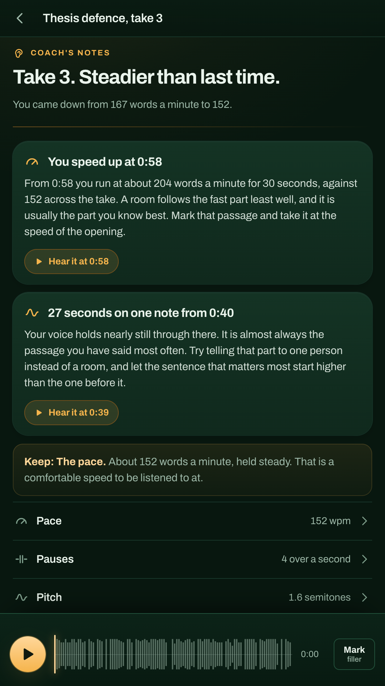
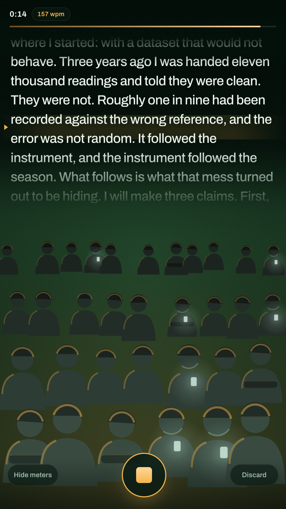
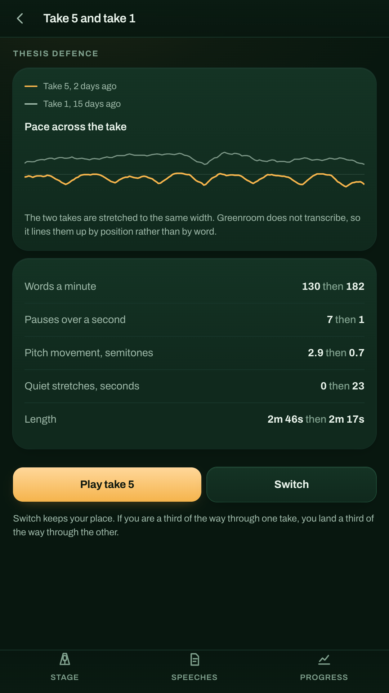

Nobody practises a speech. They think it through in the shower, then say it out loud for the first time to the people who count. Greenroom is the room you say it out loud in first, and it is listening properly.
Get it on Google Play
Four signals
Every note Greenroom gives you comes with a clock time, and every clock time is a button that plays that moment back. You are never asked to take its word for anything.
Not one number but a curve. Greenroom finds the syllable peaks in your loudness contour and draws your speed across the whole take, so the passage where you ran away with it shows up as a hill you can point at.
Silence before a line is how a room knows the line matters, and being frightened of it is the amateur tell. The pause map draws speech as ink and every silence as a literal gap, then counts the brave ones.
Monotone is what loses a room, and you cannot hear your own. Greenroom tracks the pitch of your voice against its own middle and flags the stretches where it barely moved, which are almost always the parts you have said most often.
Where you dropped away, and whether your ending faded. Measured against your own middle rather than an absolute meter, because how loud you sound depends on where you put the phone.

An empty bedroom is not the thing you are afraid of. Greenroom puts a drawn room in front of you while you record, and it reacts to how you are actually doing: heads come up when your voice moves, phones come out when you flatten, and the sceptical room stays folded until you land something.
It is a texture, not a score. Nothing about the room is written down or held against you.
The empty room is not nothing. It is a bare stage with one microphone standing in a cone of warm light, and the light answers your voice.
"You took 1 pause of a second or more in 137 seconds. Pick your two best sentences and put a full second in front of each."
Two notes a take, never a checklist. Named moment, clock time, one thing you could do differently on the next run, and one thing that is already working, because the next take has to happen.
Put any two takes of the same speech side by side. Play one, tap Switch, and you land in the same place in the other. Improvement stops being a feeling.

The analysis is arithmetic running inside the app. Greenroom does not hold the internet permission at all, so it could not send your rehearsal anywhere even if it wanted to. No account, no sync, no server to trust.
One switch makes Greenroom measure a take and then throw the audio away, keeping the notes and the charts. There is an export for a single take as a WAV and for everything as JSON.
Speech to text needs a model this app does not carry, so Greenroom cannot count filler words by itself. Instead you play the take back and tap Mark when you hear one, and the notes use your count. Words a minute is an estimate from syllables, and it says so.
So it says nothing about your eye contact, and it is a practice tool rather than therapy. If speaking in public is causing you real distress, that is worth taking to a person.
Free and complete. No account, no subscription, nothing locked.
Get it on Google Play